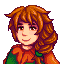

Recados Secretos · Ep. 2
O que eles
 Recado Secreto #21
Recado Secreto #21
O que eles
fazem de
madrugada?

O recado

É só um desenho…
Um relógio, a lua e uma seta apontando pra um arbusto
Flagra!
Lewis
Marnie
Eles pulam pra fora!
…e fogem cada um pra um lado
♥ curte se te ajudou